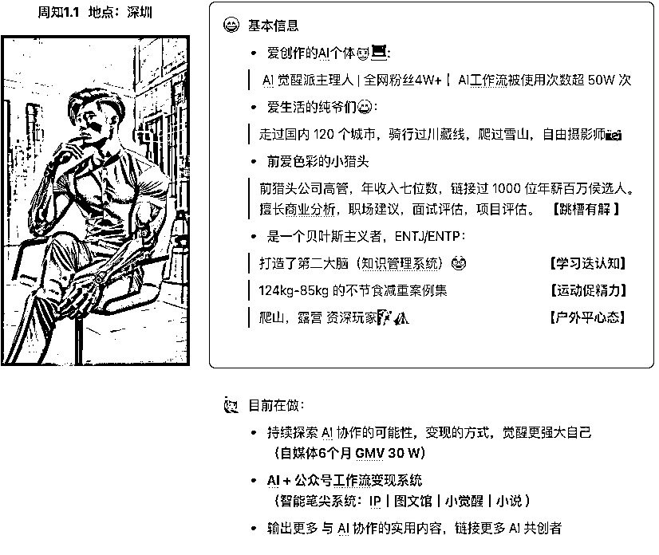

来源：https://aiawaken.feishu.cn/docx/JZJxdXMGUoTAYIxhf1Lci71lnpe
hi，我是周知，
社群里签约作家用「觉醒派智能笔尖」写了一篇文章，
刷新我们团队用 AI 写作的记录：
单篇文章 72w+
单日阅读量破 100w，单日收益 4722
数据和收益的反馈固然可喜，
但最直接反馈是
与智能笔尖一起协作的 AI 作家
AI + 内容创作真的能够拿到稀缺的结果
我一直认为，AI 不止是可以洗稿，它真正范式是
懂写作的你+智能笔尖 = 能变现的「原创文」
以下，是我对这种范式最常见的两种拆解的拆解：
输入：我最有一篇稿件任务，题目是《中年以后，和激活你的人在一起》，请你帮我写一篇 400 字左右的好文章。
回复：
废话一堆，看不下去
输入：你是一名善于写公众号网感文的作家，最有一篇稿件任务，题目是《中年以后，和激活你的人在一起》，请你帮我写一篇 400 字左右的好文章。
回复：
嗯，好一点，但是我不会读完
输入：
你是一名善于写公众号网感文的作家，最有一篇稿件任务，题目是《中年以后，和激活你的人在一起》，
第一步：通过选题《中年以后，和激活你的人在一起》分析目标读者以及文章大纲
第二步：通过选题+大纲+目标读者请你帮我写一篇 400 字左右的好文章。
回复：

终于有知道它要表达啥了
连续输入：总结你生成文章的亮点与不足，并能给到改进建议用表格形式呈现
回复：

继续输入：基于你建议的 1，3，5 对文章文案进行优化
回复：
感觉怎么样？是不是又好了一点，但是应该改没打动你
最终输入：基于上文文案内容，换成余华的写作风格表达，并扩展到 800 字
这篇 AI+ 你写的文章有没有打动你？
是，我没有余华的文笔，
我知道我想表达的选题，
AI 有余华写作技巧。
技巧是作为普通人我们没有训练的经验表达。
但，每个人都有自己对人世间的解读。
懂人生的你+懂写作 AI
我觉得这是未来写作新范式！
问小觉醒：总结公众号文章的创作流程
回：

我觉得人为参与 AI 写作提效比例是
选题阶段：人 80%+AI 提供 20%灵感补全
前期准备：人 60%收集数据+准备素材，AI40%整理论据+列出大纲
写作环节：人微调 10%+AI 写作 90%，
美化排版：人判断，决策 10%+AI90%
审核优化：人判断，决策 10%+AI90%
发布：人 100%
本质是：
人做： 选择，判断，决策，引导
AI 写作：生成内容，启发灵感各流程灵感

输入：
最终输出：
懂选题的你 + 懂写作 AI = AI 写作
我觉得这是未来写作新范式！
写作是人类突破时空限制、实现思想与知识流动的最佳途径
万年前的石头，
千年前的木简
百年前的纸张，
今天的互联网
我们用不同的载体 让思想跨越时空的界限
从钝器到刻刀
从毛笔到键盘
工具在进化
创作的效率在提升
但不变的是表达的渴望
而今天 AI 不是来取代我们 而是为创作 打开新的可能
也许未来 最好的 AI 作家 正是善用 AI 创作的你。
这才是未来写作的新范式。
AI觉醒派主理人，AI工作流专家
AI觉醒派代表作品:
Suno音乐歌词创作专家、万物皆可歌、
超级图文大师，智能笔尖，小觉醒。
